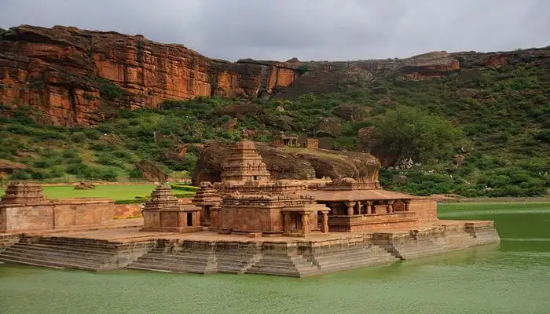

Badami - Unique Rock Cut Temples

Badami is one of the offbeat historical places in Karnataka where you will find exquisite temples and historical monuments. The megalithic dolmens is the evidence that this city was settled in prehistoric times. The unique rock-cut temples of Mahakuta is the main reason why people come to visit this place. The red sandstone cliffs, Badami Fort, and Agastya Lake are other major attractions of Badami. Rock Climbing is one of the most famous activities for the adventure enthusiasts.
Places to Stay: Hotel Badami Court, KSTDC Hotel Mayura Chalukya, Clarks Inn Badami, Agastya Villa by Vista Rooms
Places to Visit: Magnificent Badami Cave Temples , Alluring Bhutanatha Group Of Temples, Traditional Mallikarjuna Group Of Temples , Mesmerizing Badami Fort
Things to do in Badami: Rock Climbing, Archaeological tours; temples; caves exploration and nature walks.
Ideal for: Families, friends, adventure, history, nature and archaeological exploration
Ideal trip duration: 1 day
Weather: The average annual temperature is 25.7 degree Celsius and is moderate throughout the year
Best Time to visit Badami: July to March
How to reach Badami: Badami is easily accessible by roads as the nearest railway station is 100 KM away in Hubli and the nearest Airport is in Belgaum which is 190 KM away.
Go Back